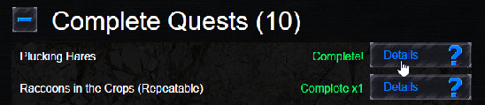

The quest log is where you can go to at a glance, see what quests you have completed, how many times you have completed them, and what quests you have in the works right now, as well as your progress in that quest.

For more details on any quest just click on the DETAILS button to bring you to the quest information page showing you what you need to collect, how many you have so far, and what the reward for finishing will be.